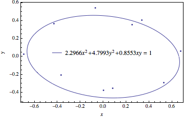

Mikhail Gaerlan
28 October 2015
An ellipse can be defined by the equation
$a _1x^2+a _2y^2+a _3xy=1$
where a1, a2, and a3 can be fit to a set of data using the least-squares method. The equations can be parametrized by the equations
$\displaystyle{x=\rho\cos(\theta)}$
$\displaystyle{y=\rho\sin(\theta)}$
$\displaystyle{\frac{1}{\rho^2}=a _1\cos^2(\theta)+a _2\sin^2(\theta)+a _3\cos(\theta)\sin(\theta)}$

$A _{i1} = x _i^2,\;A _{i2} = y _i^2,\;A _{i3} = x _iy _i,\;b _i = 1.00$